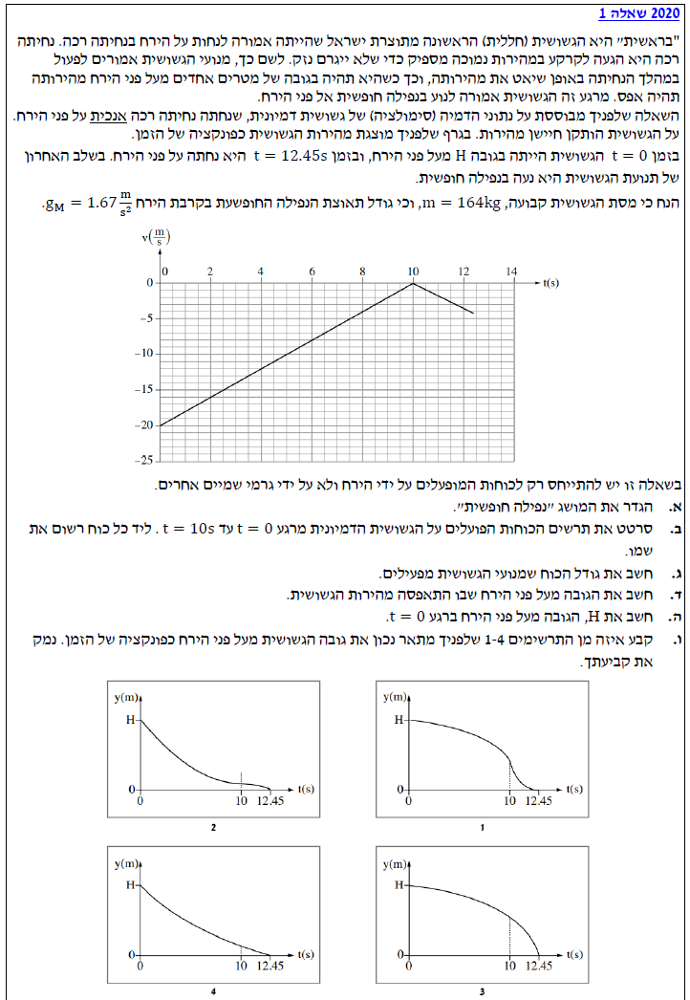
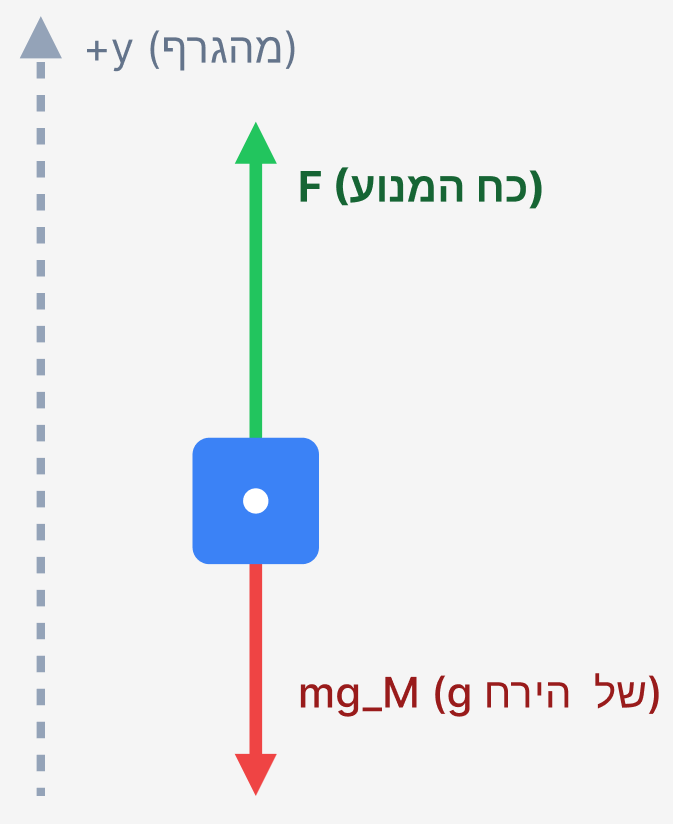

שלום לתלמידים! כאן נפתור יחד, צעד אחר צעד, את שאלת הבגרות העוסקת בנחיתת החללית "בראשית" על הירח. מטרתנו היא להבין את העקרונות הפיזיקליים לעומק ולא רק להציב מספרים בנוסחאות.

לפני שניגש לסעיפים עצמם, נאסוף ונרכז את כל הנתונים שסופקו לנו בתיאור המילולי של השאלה ובגרף. בסעיפים הבאים, נחזור ונציג כנתון את המידע הרלוונטי מתוך רשימה זו בהתאם לצורך השלב בפתרון:
אין נתונים מספריים חדשים בסעיף זה. אנו מתבקשים להגדיר מושג פיזיקלי תיאורטי מתוך חומר הלימוד.
הגדרה מדויקת למושג "נפילה חופשית".
שאלה תיאורטית, אין צורך בנוסחאות.
על פי הגדרות הפיזיקה, תנועה מוגדרת כ"נפילה חופשית" כאשר הגוף נע תחת השפעתו של כוח הכובד בלבד (כוח המשיכה), וללא שום כוח אחר הפועל עליו (כמו התנגדות אוויר, כוח מנוע, או כוח תמיכה).
אנו מתמקדים בפרק הזמן \( t=0 \) עד \( t=10\text{s} \). מקריאת הפתיח של השאלה אנו למדים שבפרק זמן זה מנועי הגשושית פועלים, ולכן היא אינה בנפילה חופשית. החללית נמצאת בקרבת הירח. המסה של החללית (אם כי לא נדרשת לתרשים) היא \( m \).
לשרטט תרשים כוחות חופשי (תרשים תרשים גוף חופשי - FBD) הפועלים על הגשושית ולרשום את שמו של כל כוח.
אמנם המטרה היא שרטוט ויזואלי, אך אנו משתמשים בנוסחה לכוח הכובד בדיוק כפי שהיא מופיעה בדף הנוסחאות: \( F = mg \) (כדי למנוע בלבול עם כוח המנוע \( F \), מקובל לסמן את כוח הכובד בתרשים כ- \( F_g \)).
על הגשושית בפרק זמן זה פועלים שני כוחות בלבד בשפת הירח (כפי שנאמר בפתיח, יש להתייחס רק לכוחות מן הירח):
1. כוח הכובד שהירח מפעיל על החללית כלפי מטה (לכיוון מרכז הירח).
2. כוח הדחף שמפעילים המנועים כלפי מעלה (כדי להאט את קצב הנפילה שלה).

מתוך פתיח השאלה אנו דולים את הנתונים המספריים הראשונים שלנו ומוודאים שהם ביחידות MKS:
מסת הגשושית: \( m = 164 \text{ kg} \) (היחידה תקינה).
תאוצת הכובד על פני הירח: \( g_M = 1.67 \text{ m/s}^2 \).
מתוך הגרף לפרק הזמן \( t=0 \) עד \( t=10\text{s} \):
מהירות התחלתית: \( v_0 = -20 \text{ m/s} \) (המהירות שלילית כי הגשושית נעה מטה, נגד הכיוון החיובי שהוכתב על ידי הגרף).
מהירות בסוף הקטע: \( v(10) = 0 \text{ m/s} \).
פרק הזמן: \( \Delta t = 10 - 0 = 10\text{s} \).
את גודל הכוח \( F \) שמפעילים מנועי הגשושית.
מקינמטיקה, למציאת התאוצה מתוך הגרף (שיפוע): \( a = \frac{dv}{dt} \) או במקרה של תאוצה קבועה: \( \bar{a} = \frac{\Delta v}{\Delta t} \).
מדינמיקה, החוק השני של ניוטון: \( \Sigma\vec{F} = m\vec{a} \).
כוח הכבידה: \( F = mg \).
שלב ראשון - מציאת תאוצת הגשושית \( a \) בפרק הזמן הנתון מתוך הגרף. הגרף הוא קו ישר, לכן התאוצה קבועה ושווה לשיפוע הגרף:
התאוצה חיובית, כלומר כיוונה כלפי מעלה (בכיוון החיובי של ציר ה-y שהוכתב לנו על ידי הגרף).
שלב שני - שימוש בחוק השני של ניוטון כדי למצוא את כוח המנוע. נרשום את משוואת הכוחות לאורך ציר ה-y:
נבודד את הכוח הדרוש, \( F \):
כעת נציב את הנתונים המספריים:
רגע איפוס המהירות הוא \( t = 10\text{s} \). השאלה היא מה הגובה באותו רגע, שנסמנו כ- \( y(10) \).
מהגרף אנו רואים שמרגע \( t = 10\text{s} \) ועד לרגע הפגיעה בקרקע \( t = 12.45\text{s} \), הגשושית בנפילה חופשית.
לכן בקטע זה התאוצה שווה בדיוק לתאוצת נמשך הכובד של הירח, אך כיוונה כלפי מטה. מכיוון שציר ה-y שלנו מוגדר כלפי מעלה (כפי שהסקנו מהגרף), התאוצה בקטע השני היא \( a_2 = -g_M = -1.67 \text{ m/s}^2 \).
מהירות התחלתית של פרק זמן זה (ברגע \(t=10\)): \( v_0 = 0 \text{ m/s} \).
מיקום סופי (פגיעה בקרקע) בזמן \(t=12.45\): \( y_{final} = 0 \text{ m} \).
פרק הזמן של הנפילה החופשית: \( \Delta t = 12.45 - 10 = 2.45\text{s} \).
את המיקום (הגובה) של הגשושית ברגע בו \( t=10\text{s} \), כלומר את \( y(10) \).
משוואת מקום-זמן עבור תנועה שוות-תאוצה: \( x = x_0 + v_0t + \frac{1}{2}at^2 \). אנו נתאים את הסימון למימד האנכי \( y \).
כדי להקל על החישוב, נוח להתייחס לפרק הזמן שבין \( t=10\text{s} \) ל- \( t=12.45\text{s} \) כאל תנועה עצמאית. נציב במשוואת מקום-זמן את הנתונים עבור פרק זמן זה:
אנו מסתכלים כעת על החלק הראשון של התנועה, מזמן \( t=0 \) ועד \( t=10\text{s} \).
מהירות התחלתית (מתוך הגרף): \( v_0 = -20 \text{ m/s} \).
מהירות סופית לקטע זה: \( v(10) = 0 \text{ m/s} \).
פרק הזמן: \( \Delta t = 10\text{s} \).
המיקום בסוף הקטע, כפי שחישבנו בסעיף הקודם: \( y(10) = 5.01 \text{ m} \).
את המיקום ההתחלתי \( y(0) \) אשר מוגדר בשאלה כ- \( H \).
ניתן להשתמש בנוסחת מקום-זמן הממוצעת: \( x = x_0 + \frac{v_0 + v}{2}t \)
או בעזרת חישוב שטח גרף מהירות-זמן, כאשר ההעתק שווה ל: \( \Delta y = \text{Area} \).
נשתמש בשיטת השטח, שהיא פשוטה ומהירה מאוד. בפרק הזמן שבין \( t=0 \) ל- \( t=10\text{s} \), הגרף יוצר משולש ישר זווית הכלוא בין הפונקציה לבין ציר הזמן. שטח המשולש הזה נותן לנו את ההעתק (\( \Delta y \)) שעשתה הגשושית בזמן פעולת המנועים.
ההעתק הוא \(-100\text{m}\), כלומר הגשושית ירדה 100 מטרים. אנו יודעים כי ההעתק מוגדר כמיקום סופי פחות מיקום התחלתי:
נעביר אגפים כדי לבודד את \( H \):
נתונים ארבעה תרשימים אפשריים (1 עד 4) המתארים את הגובה \( y \) כפונקציה של הזמן \( t \).
אנו יודעים את המאפיינים הבאים על התנועה:
1. הגוף מתחיל בגובה \( H \) ומסיים בגובה \( 0 \).
2. בזמן \( t=10\text{s} \), המהירות מתאפסת (\( v = 0 \)).
3. לפני \( t=10 \), גודל המהירות קטן (התאוצה הפוכה למהירות).
4. אחרי \( t=10 \), גודל המהירות גדל (נפילה חופשית ממנוחה).
לקבוע איזה מן התרשימים מתאר נכון את תנועת הגשושית ולנמק את הבחירה.
הקשר המתמטי-קינמטי בין מיקום למהירות: \( v = \frac{dy}{dt} \). כלומר, המהירות בכל רגע שווה לשיפוע המשיק לגרף המקום-זמן באותו רגע.
ננתח את הגרף הנדרש על פי שלבי התנועה, בעזרת מושג השיפוע (המהירות):
כאשר אנו בוחנים את תרשים מספר 2, אנו רואים שהוא מקיים בדיוק את התנאים הללו: מתחיל תלול ומתמתן עד למשיק אופקי בדיוק ב- \( t=10\text{s} \), ומנקודה זו מתחיל להיות תלול יותר ויותר כלפי מטה עד לפגיעה בציר בזמן \( 12.45\text{s} \).